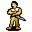

Lovis¶| Stat | Value |
|---|---|
| Class | humanoid |
| HP | 0 |
| Max AP | 10 |
| Attack cost | 10 |
| Move cost | 10 |
| Damage | 0 |
| Attack chance | 0 |
| Block chance | 0 |
| Damage resistance | 0 |
| Critical skill | 0 |
| Critical multiplier | 0 |
Found on¶
Quests¶
- Roses: stages 190, 200, 210, 211
- guynmart nondisplay (hidden flag): stages 33, 36
Dialogue (58 lines)
What the dialogue says, exactly as in the game files. Lines are listed once; links jump to the line a choice leads to.
guynmart_lovis2_10 (silent check: the first matching branch below is taken)
- branch 1 (if reached stage 210 of Roses; reached stage 1 of Ringmaker (hidden flag)) → guynmart_lovis2_450
- branch 2 (if reached stage 210 of Roses; NOT reached stage 200 of Roses) → guynmart_lovis2_12
- branch 3 (if reached stage 210 of Roses) → guynmart_lovis2_14
- branch 4 (if NOT reached stage 190 of Roses) → guynmart_lovis2_20
- branch 5 (if reached stage 32 of guynmart nondisplay (hidden flag)) → guynmart_lovis2_120
- branch 6 → guynmart_lovis2_30
guynmart_lovis2_450 Lovis: “We have good news for you.”
- Next → guynmart_lovis2_452
guynmart_lovis2_12 Lovis: “Hello $playername.”
guynmart_lovis2_14 Lovis: “$playername - what a joy to see you again.”
- “Oh yes, I'm happy too.” → conversation ends
guynmart_lovis2_20 Lovis: “Welcome $playername - you helped us in our greatest needs. But let Lady Hannah speak first.”
- Next → guynmart_hannah2_30
guynmart_lovis2_120 Lovis: “So you found something you like. Good.” — effects: spawns monsters on guynmart_main_1, removes monsters from guynmart_main_1
- “Oh yes - I am overwhelmed by your generosity!” → guynmart_lovis2_130
guynmart_lovis2_30 Lovis: “We are deeply in your debt, indeed.”
- Next → guynmart_lovis2_40
guynmart_lovis2_452 Lovis: “Rorthron, the ringmaker, was behaving rather strangely, and so we questioned him. It came to light that he seems to have damaged one of your rings.”
- Next → guynmart_lovis2_454
guynmart_hannah2_30 Hannah: “Many things have happened. Norgothla came back and Unkorh flew, his men dead or scattered.”
- Next → guynmart_hannah2_32
guynmart_lovis2_130 (silent check: the first matching branch below is taken) — effects: sets stage 36 of guynmart nondisplay (hidden flag)
- branch 1 (if reached stage 181 of Roses) → guynmart_lovis2_141
- branch 2 → guynmart_lovis2_140
guynmart_lovis2_40 (silent check: the first matching branch below is taken)
- branch 1 (if reached stage 1 of Ringmaker (hidden flag)) → guynmart_lovis2_50
- branch 2 → guynmart_lovis2_70
guynmart_lovis2_454 Lovis: “He eventually admitted that he secretly exchanged your ring for a worthless ring.”
- Next → guynmart_lovis2_456
guynmart_hannah2_32 Hannah: “We found Guynmart down in a cell, but it was too late - My beloved father died in my arms.”
- Next → guynmart_hannah2_34
guynmart_lovis2_141 (silent check: the first matching branch below is taken) — effects: sets stage 211 of Roses
- branch 1 → guynmart_lovis2_151
guynmart_lovis2_140 (silent check: the first matching branch below is taken) — effects: sets stage 210 of Roses, spawns monsters on guynmart_wood_9
- branch 1 → guynmart_lovis2_150
guynmart_lovis2_50 Lovis: “We also have good news for you.”
- Next → guynmart_lovis2_52
guynmart_lovis2_70 (silent check: the first matching branch below is taken)
- branch 1 (if killed 1× Sheep; NOT reached stage 33 of guynmart nondisplay (hidden flag)) → guynmart_lovis2_200
- branch 2 → guynmart_lovis2_100
guynmart_lovis2_456 Lovis: “He promised never to do such things again and handed the real ring over to us. We want to leave it at that.”
- Next → guynmart_lovis2_460
guynmart_hannah2_34 Hannah: “And Lovis and I are finally married. In spite of the cruel events, or just to forget them a little, we celebrated a joyous feast.”
- Next → guynmart_hannah2_40
guynmart_lovis2_151 Lovis: “At last we have to part. Farewell until we meet again! When you will find your brother, tell him that he is always welcome.”
- “Goodbye.” → conversation ends
guynmart_lovis2_150 Lovis: “We prepared a surprise for you. Go and look east of the castle near the sheep pasture. Farewell until we meet again!”
- “Goodbye.” → conversation ends
guynmart_lovis2_52 Lovis: “Rorthron, the ringmaker, was behaving rather strangely, and so we questioned him. It came to light that he seems to have damaged one of your rings.”
- Next → guynmart_lovis2_54
guynmart_lovis2_200 Lovis: “Regrettably, we still have to sort out an unpleasant thing. Let our shepherd speak.” — effects: spawns monsters on guynmart_main_1
- Next → guynmart_lovis2_210
guynmart_lovis2_100 Lovis: “You have earned your reward. Go now into our treasury.” — effects: sets stage 200 of Roses, spawns monsters on guynmart_main_1, removes monsters from guynmart_main_1
guynmart_lovis2_460 Lovis: “So here, take your precious ring back.” — effects: gives 1× Ring of lesser Shadow, clears stage 1 of Ringmaker (hidden flag)
- “Oh! I can't believe it! Is it really true?” → conversation ends
guynmart_hannah2_40 Hannah: “If it wasn't for you, Guynmart castle would look different today: dark and gloomy and no place you would want to live.”
- Next → guynmart_hannah2_50
guynmart_lovis2_54 Lovis: “He eventually admitted that he secretly exchanged your ring for a worthless ring.”
- Next → guynmart_lovis2_56
guynmart_lovis2_210 Shepherd: “Grumble ... grumble...”
- Next → guynmart_lovis2_220
guynmart_hannah2_50 Lovis: “Take this rose as a token of my deepest thanks. May its lovely fragrance last forever.” — effects: sets stage 190 of Roses, gives 1× Rose
- “Thank you, Lady.” → guynmart_hannah2_20
guynmart_lovis2_56 Lovis: “He promised never to do such things again and handed the real ring over to us. We want to leave it at that.”
- Next → guynmart_lovis2_60
guynmart_lovis2_220 (silent check: the first matching branch below is taken)
- branch 1 (if reached stage 181 of Roses) → guynmart_lovis2_220b
- branch 2 → guynmart_lovis2_220a
guynmart_hannah2_20 Lovis: “Now let us hear Lovis.”
- Next → guynmart_lovis2_30
guynmart_lovis2_60 Lovis: “So here, take your precious ring back.” — effects: gives 1× Ring of lesser Shadow, clears stage 1 of Ringmaker (hidden flag)
- “Oh! I can't believe it! Is it really true?” → guynmart_lovis2_70
guynmart_lovis2_220b (silent check: the first matching branch below is taken)
- branch 1 → guynmart_lovis2_220c
guynmart_lovis2_220a (silent check: the first matching branch below is taken)
- branch 1 → guynmart_lovis2_220c
guynmart_lovis2_220c Lovis: “It seems sheep were killed by your hand. Our sheep, to be precise.”
- Next → guynmart_lovis2_221
guynmart_lovis2_221 Lovis: “You will be fined 100 gold for each sheep you killed. Do you accept this judgment?”
- “Yes, what I did was stupid.” → guynmart_lovis2_300
- “Lies! All lies!” → guynmart_lovis2_222
- “I can explain - it was an accident...” → guynmart_lovis2_222
guynmart_lovis2_300 (silent check: the first matching branch below is taken)
- branch 1 (if killed 25× Sheep) → guynmart_lovis2_325
- branch 2 (if killed 20× Sheep) → guynmart_lovis2_320
- branch 3 (if killed 15× Sheep) → guynmart_lovis2_315
- branch 4 (if killed 10× Sheep) → guynmart_lovis2_310
- branch 5 (if killed 9× Sheep) → guynmart_lovis2_309
- branch 6 (if killed 8× Sheep) → guynmart_lovis2_308
- branch 7 (if killed 7× Sheep) → guynmart_lovis2_307
- branch 8 (if killed 6× Sheep) → guynmart_lovis2_306
- branch 9 (if killed 5× Sheep) → guynmart_lovis2_305
- branch 10 (if killed 4× Sheep) → guynmart_lovis2_304
- branch 11 (if killed 3× Sheep) → guynmart_lovis2_303
- branch 12 (if killed 2× Sheep) → guynmart_lovis2_302
- branch 13 (if killed 1× Sheep) → guynmart_lovis2_301
guynmart_lovis2_222 (silent check: the first matching branch below is taken)
- branch 1 (if reached stage 181 of Roses) → guynmart_lovis2_231
- branch 2 → guynmart_lovis2_230
guynmart_lovis2_325 Lovis: “2,500 gold for 25 or perhaps even more killed sheep.”
- “Here is the gold.” (if pay 2,500 gold) → guynmart_lovis2_360
- “I don't have enough gold.” → guynmart_lovis2_350
guynmart_lovis2_320 Lovis: “2,000 gold for 20 or perhaps even more killed sheep.”
- “Here is the gold.” (if pay 2,000 gold) → guynmart_lovis2_360
- “I don't have enough gold.” → guynmart_lovis2_350
guynmart_lovis2_315 Lovis: “1,500 gold for 15 or perhaps even more killed sheep.”
- “Here is the gold.” (if pay 1,500 gold) → guynmart_lovis2_360
- “I don't have enough gold.” → guynmart_lovis2_350
guynmart_lovis2_310 Lovis: “1,000 gold for 10 or perhaps even more killed sheep.”
- “Here is the gold.” (if pay 1,000 gold) → guynmart_lovis2_360
- “I don't have enough gold.” → guynmart_lovis2_350
guynmart_lovis2_309 Lovis: “900 gold for 9 killed sheep.”
- “Here is the gold.” (if pay 900 gold) → guynmart_lovis2_360
- “I don't have enough gold.” → guynmart_lovis2_350
guynmart_lovis2_308 Lovis: “800 gold for 8 killed sheep.”
- “Here is the gold.” (if pay 800 gold) → guynmart_lovis2_360
- “I don't have enough gold.” → guynmart_lovis2_350
guynmart_lovis2_307 Lovis: “700 gold for 7 killed sheep.”
- “Here is the gold.” (if pay 700 gold) → guynmart_lovis2_360
- “I don't have enough gold.” → guynmart_lovis2_350
guynmart_lovis2_306 Lovis: “600 gold for 6 killed sheep.”
- “Here is the gold.” (if pay 600 gold) → guynmart_lovis2_360
- “I don't have enough gold.” → guynmart_lovis2_350
guynmart_lovis2_305 Lovis: “500 gold for 5 killed sheep.”
- “Here is the gold.” (if pay 500 gold) → guynmart_lovis2_360
- “I don't have enough gold.” → guynmart_lovis2_350
guynmart_lovis2_304 Lovis: “400 gold for 4 killed sheep.”
- “Here is the gold.” (if pay 400 gold) → guynmart_lovis2_360
- “I don't have enough gold.” → guynmart_lovis2_350
guynmart_lovis2_303 Lovis: “300 gold for 3 killed sheep.”
- “Here is the gold.” (if pay 300 gold) → guynmart_lovis2_360
- “I don't have enough gold.” → guynmart_lovis2_350
guynmart_lovis2_302 Lovis: “200 gold for 2 killed sheep.”
- “Here is the gold.” (if pay 200 gold) → guynmart_lovis2_360
- “I don't have enough gold.” → guynmart_lovis2_350
guynmart_lovis2_301 Lovis: “100 gold for the killed sheep.”
- “Here is the gold.” (if pay 100 gold) → guynmart_lovis2_360
- “I don't have enough gold.” → guynmart_lovis2_350
guynmart_lovis2_231 Lovis: “As you wish. I am very disappointed with you - go now.”
- “No, sorry, I didn't mean it.” → guynmart_lovis2_220
- “I will go. Bye.” → guynmart_lovis2_241
guynmart_lovis2_230 Lovis: “As you wish. I already regret that we prepared a surprise for you next to the sheep pastures. I am very disappointed in you. Go now.”
- “No, sorry, I didn't mean it.” → guynmart_lovis2_220
- “I will go. Bye.” → guynmart_lovis2_240
guynmart_lovis2_360 Lovis: “[Gold taken] All the sheep you killed are paid for, so now we will forget the whole thing.” — effects: sets stage 33 of guynmart nondisplay (hidden flag), removes monsters from guynmart_main_1
- “I am relieved.” → guynmart_lovis2_100
guynmart_lovis2_350 Lovis: “You will find a way to get the missing gold. Then come back and pay the rest.”
- “OK.” → conversation ends
guynmart_lovis2_241 (silent check: the first matching branch below is taken) — effects: sets stage 211 of Roses, sets stage 36 of guynmart nondisplay (hidden flag), removes monsters from guynmart_main_1
guynmart_lovis2_240 (silent check: the first matching branch below is taken) — effects: sets stage 210 of Roses, sets stage 36 of guynmart nondisplay (hidden flag), removes monsters from guynmart_main_1, spawns monsters on guynmart_wood_9
Version history¶
| Version | Change |
|---|---|
| v0.7.2 | Added Dialogue: 58 lines added |
| v0.8.18 | Dialogue: 4 lines changed · text: “1000 gold for 10 or perhaps even more killed sheep.” → “{1000} gold for 10 or perhaps even more killed sheep.” · text: “1500 gold for 15 or perhaps even more killed sheep.” → “{1500} gold for 15 or perhaps even more killed sheep.” |
Verified against v0.8.18 and every earlier release back to v0.7.0 (game data compared release by release).
Community notes¶
Written by players, not generated from game data. Observations: what players notice in-game · Lore: the in-world story · Trivia: real-world facts, references, development history · Theory / speculation: unconfirmed ideas; may just be unfinished content
Observations¶
Nothing here yet. Know something? Add it.
Lore¶
Nothing here yet. Know something? Add it.
Trivia¶
Nothing here yet. Know something? Add it.
Theory / speculation¶
Nothing here yet. Know something? Add it.
Monster ID: guynmart_lovis2 · Data from v0.8.18